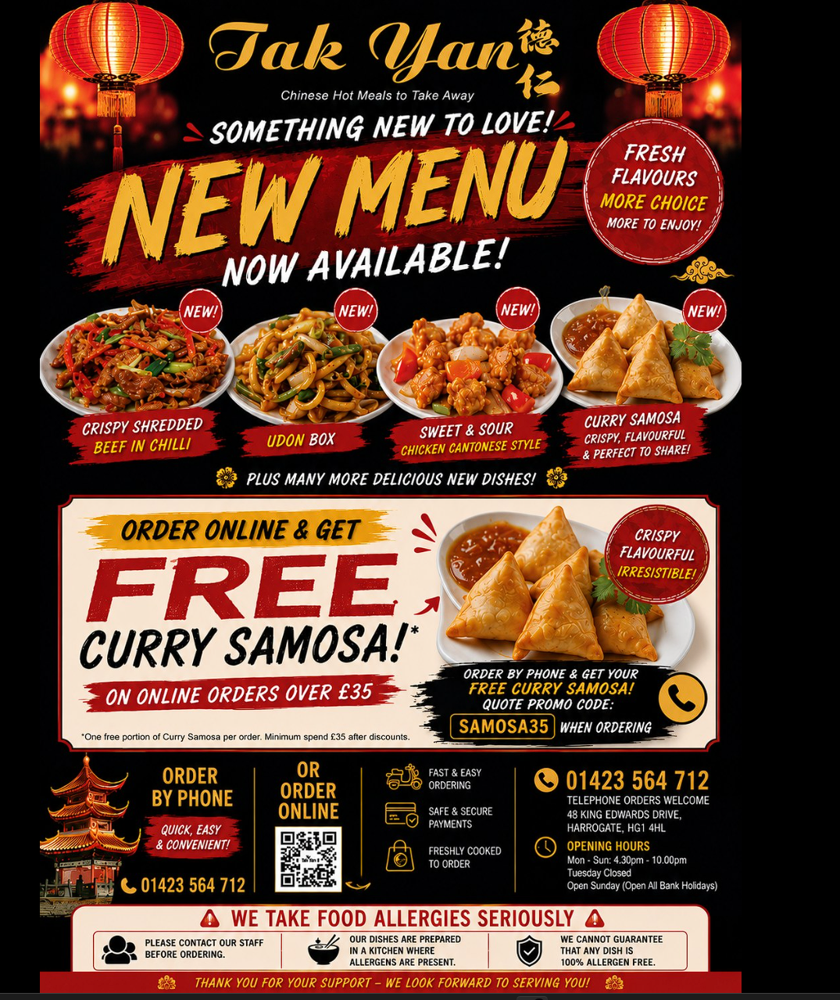
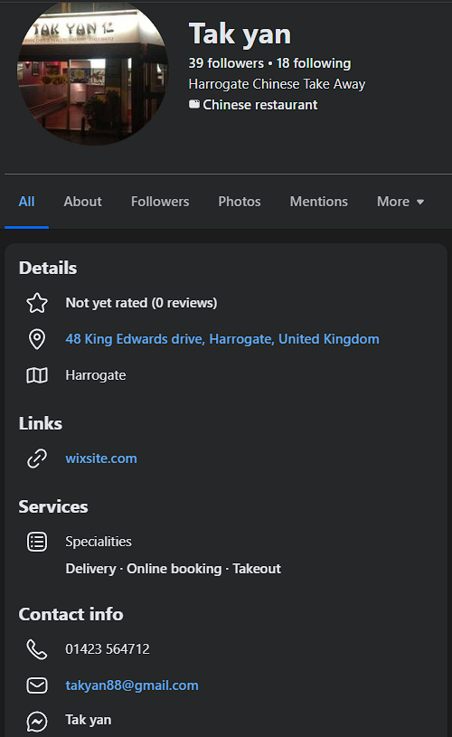

Freshly cooked to order
Chinese takeaway favourites with fast local service in Harrogate.
From crispy shredded beef and classic chow mein to set meals, noodle boxes, and family night extras, Tak Yan serves reliable takeaway food with collection, delivery, and easy telephone ordering.
- 48 King Edwards Drive, Harrogate HG1 4HL
- Open 4:30pm to 10:00pm, Tuesday closed
- Delivery service available

Why locals order here
Comfort-food classics, quick ordering, and the kind of menu built for repeat cravings.
Big menu, easy choices
The menu covers appetisers, crispy favourites, chow mein, fried rice, curry, black bean, satay, oyster sauce dishes, set meals, kids meals, and gluten-free options.
Built for sharing nights in
House combinations, combo boxes, extras, and set meals make it easy to order for one, for two, or for the full table without overcomplicating it.
Direct local service
Call ahead for collection, arrange delivery, and speak to the team directly if you have allergy questions or need help choosing the right dishes.
Current offer
Make the most of the house extras when you order.
Online orders over £35 can qualify for a free portion of curry samosas, and orders over £20 are promoted with free prawn crackers. Offers may vary, so it is worth checking when you call.
Promo note
SAMOSA35
Quote when ordering if the offer is available.
Order with confidence
Everything customers need before they pick up the phone.
Allergy guidance
The team asks customers to speak to staff before ordering about allergies or special dietary needs. Dishes are prepared in a shared kitchen environment.
Fast family ordering
Set meals, appetiser combinations, and popular mains make it simple to build an order for one person, a couple, or a full family night in.
Local convenience
Collection is straightforward from King Edwards Drive, and delivery service is available for customers across the local area.
Visit or call
Tak Yan, 48 King Edwards Drive, Harrogate
Opening hours
Monday to Sunday: 4:30pm to 10:00pm
Tuesday: Closed
Open Sundays and bank holidays
Service
Chinese hot meals to take away
Telephone orders, collection, and delivery
